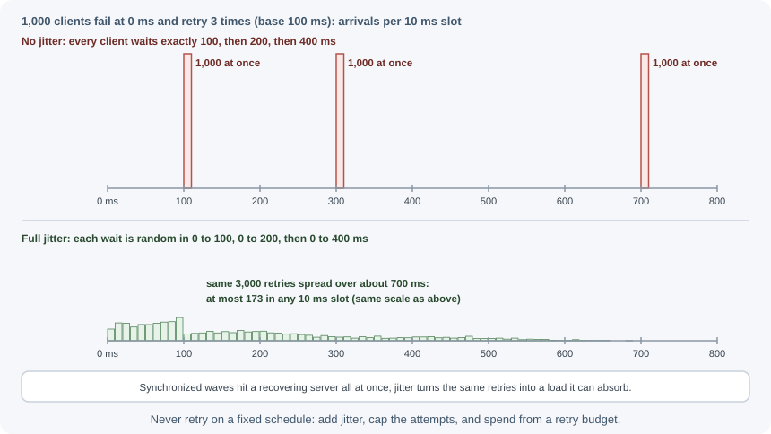

Resilience Patterns Across Servers¶
Once a request crosses several servers, partial failure is normal: one dependency is slow, one instance is overloaded, one zone has packet loss. The goal of the patterns in this lesson is to stop a local problem from turning into a system-wide outage, the cascading failure that takes down healthy services because they waited, retried, and queued on a sick one.
This lesson covers timeouts and deadline budgets, retries with exponential backoff and jitter (and how retries cause storms), idempotency, circuit breakers, bulkheads, load shedding and graceful degradation, rate limiting at the edge compared with inside services, backpressure, and how health and readiness checks fit in. Every pattern comes with Node.js code for the TaskFlow API; each module below runs as written on Node.js 22 and later, with Express 5 for the middleware.
Why it matters¶
The most damaging outages are often not caused by the first failure but by the reaction to it. A database slows down; every API instance keeps its requests waiting for 30 seconds, so the API's connection and memory limits fill up; clients time out and retry, tripling the load; the autoscaler adds instances, which open more database connections; and the database never recovers. Each of those steps was a reasonable local decision with a bad default.
The patterns here are cheap to add and change the shape of failures: slow dependencies fail fast, overloaded services reject some work instead of all of it, retries help with blips instead of amplifying outages, and users see a degraded page instead of an error page.
Real-world usage¶
- Amazon Builders' Library. The article Timeouts, retries, and backoff with jitter describes how Amazon picks a timeout from an acceptable false-timeout rate (for example 0.1%, so the downstream's p99.9 latency), shows that three retries at each of five layers can multiply load on a struggling database 243 times, recommends retrying at a single point in the stack, and explains the local token bucket that AWS added to its SDKs in 2016 to limit retries.
- Amazon Builders' Library. The article Using load shedding to avoid overload distinguishes throughput (everything sent to a server) from goodput (the requests answered successfully and fast enough to be useful), and shows how shedding excess requests keeps goodput steady when offered load goes far beyond capacity.
- Google SRE. The chapter Handling Overload describes a per-request retry budget of up to three attempts, a per-client budget that keeps retries below 10% of requests (limiting load growth to about 1.1 times instead of three), request criticality propagated through RPCs, and client-side adaptive throttling.
- Netflix. The Hystrix README explains that the library that popularized circuit breakers and bulkheads in Java is in maintenance mode, because Netflix moved toward adaptive approaches such as adaptive concurrency limits and recommends projects like resilience4j for new work.
- Google. The Tail at Scale (Dean and Barroso, 2013) explains why rare slow responses dominate latency in systems that fan out to many servers, and describes tail-tolerant techniques such as hedged requests.
Popular tools and providers: resilience4j (JVM), Polly (.NET), cockatiel and opossum (Node.js), Envoy and service meshes (timeouts, retries, outlier detection), API gateways and CDNs for rate limiting, and chaos tools for testing all of it.
How it works¶
Timeouts: every remote call needs one¶
A call without a timeout can wait forever, and every waiting request holds a socket, memory, and often a database connection. Set three kinds:
| Timeout | Bounds | Typical value |
|---|---|---|
| Connect | Establishing the TCP or TLS connection | Short: tens to a few hundred milliseconds inside a data center |
| Request (per try) | One attempt, from sending to the last byte | From the dependency's high-percentile latency, such as p99.9 |
| Overall (deadline) | The whole operation, including retries | What the caller can afford |
Choose the per-try timeout from measurements: pick the share of false timeouts you accept (0.1% means using the dependency's p99.9 latency) and add padding when p99.9 is close to the median.
Timeouts must also nest: an inner call's timeout must fit inside the outer one, or the outer caller gives up while the inner work continues. The robust way is to propagate a deadline: the edge sets a total budget, each hop subtracts what it used and passes the rest on, and no hop starts work it cannot finish in time. gRPC does this natively with deadlines; with HTTP you pass the remaining budget in a header. Passing a relative budget (milliseconds left) rather than an absolute timestamp avoids errors from clock skew between servers.
![Diagram: a 2,000 millisecond budget at the TaskFlow API; the API spends 200 milliseconds, then calls the tasks service with a header carrying 1,750 milliseconds (the rest minus a 50 millisecond margin); tasks spends 250 milliseconds and queries the database with 1,450 milliseconds left; the query takes 300 milliseconds; every hop must stop by the 2,000 millisecond mark when the caller gives up; without propagation each hop has its own fixed 5 second timeout, so tasks and the database keep working long after the API has answered 504.](../timeout-budget-propagation.svg)
Retries, backoff, and jitter¶
Retries turn transient failures (a dropped connection, an instance that was just terminated, a brief overload) into successes. They are also the most common amplifier of outages, so they need four guards:
- Only retry what is safe. Idempotent operations (GET, PUT, DELETE, or a POST with an idempotency key) and failures that may succeed next time: connection errors, timeouts, 429, 502, 503, and 504. Never retry 400-class client errors.
- Back off exponentially, with jitter. Wait longer after each failure (for example 100, 200, 400 ms, capped) and randomize the wait. With "full jitter" the wait is a random value between zero and the exponential backoff. Without jitter, every client that failed at the same moment retries at the same moment.
- Cap attempts and respect the deadline. Two or three attempts in
total, never past the caller's deadline, and honor
Retry-After. - Spend from a retry budget. Limit retries to a fraction of normal traffic (around 10%), so when a dependency is down the retries stop instead of tripling its load.

Retry storms come from layering. If the API retries 3 times, the tasks service retries each call 3 times, and the database client retries 3 times, one user request becomes up to 27 database queries during a failure. Amazon's example of three retries at each of five layers gives 3⁵ = 243. Retry at one layer (usually the one closest to the user, or the service mesh, but not both) and make every other layer fail fast.
Hedged requests are a related technique for tail latency: if a read has not answered after, say, its p95 latency, send a second copy to another replica and use whichever answers first. Hedge only idempotent reads, and only a small fraction of requests.
Idempotency: making retries safe¶
A retried "create task" must not create two tasks. The client generates an idempotency key once per logical operation and sends it with every attempt; the server stores the key with the result and returns the stored result for repeats. Patterns and storage are covered in timeouts, retries, and idempotency in the Backend section, and the Builders' Library article Making retries safe with idempotent APIs explains how Amazon designs APIs around it.
Circuit breakers¶
A circuit breaker watches calls to one dependency and stops calling it when it is clearly failing. While open, calls fail immediately, so the caller does not wait on timeouts, and the dependency gets breathing room to recover.
![Diagram: a circuit breaker starts Closed with calls passing and results recorded; when the failure rate reaches 50 percent of the last 20 calls, with at least 10 calls observed, it moves to Open, where calls fail fast, no load reaches the dependency, and callers serve cached or degraded data; after a 10 second cool-down it moves to Half-open and allows a few trial calls; 2 successful trial calls return it to Closed, and a failed trial call sends it back to Open; timeouts, connection errors, 5xx, and 429 count as failures, but 4xx caused by the caller's input do not.](../circuit-breaker-state-machine.svg)
Design choices:
- What counts as failure: timeouts, connection errors, 5xx, and 429; not 4xx errors caused by bad input.
- When to open: a failure rate over a window with a minimum number of calls, so three failures out of three do not trip it at 3 a.m.
- What callers do while open: a fallback (cached data, a default, a feature switched off) or a fast error. Amazon's article Avoiding fallback in distributed systems warns that rarely used fallback paths are hard to test and can fail or overload something else exactly when needed, so keep fallbacks simple and exercise them regularly.
- One breaker per dependency (and sometimes per endpoint), never one for "everything downstream".
Load balancers and meshes implement a related idea per instance: outlier detection ejects a single misbehaving instance for a while, whereas a circuit breaker reacts to the dependency as a whole.
Bulkheads¶
A ship's bulkheads keep one flooded compartment from sinking the ship. In software, a bulkhead is a separate, bounded pool of capacity per dependency or workload, so one slow dependency can only exhaust its own share.
![Diagram: with one shared pool of 50 slots in the API process, a slow reports dependency fills every slot, so tasks and login requests find no free slot, queue, and time out, and the whole API looks down; with bulkheads, tasks has 30 slots and normal load, reports has 10 slots all stuck on the slow dependency, auth has 10 slots and normal load, extra reports calls are rejected at once and answered with a fallback, and tasks and login keep working; the same idea applies to per-dependency pools, separate fleets, and cells.](../bulkhead-isolation.svg)
The same idea works at every scale: concurrency limits and connection pools per dependency inside a process, separate worker fleets for batch and interactive traffic, separate load balancer target groups for expensive endpoints, and whole cells for groups of customers (see how top companies run at scale).
Load shedding and graceful degradation¶
Past its capacity, a server that accepts everything gets slower for
everyone until nearly every request times out: throughput stays high
while goodput collapses. Load shedding rejects the excess early and
cheaply, with 503 and Retry-After, so the requests it accepts still
finish quickly.
- Detect overload directly: in-flight requests above a measured limit, time spent queued, or (in Node.js) event loop delay. CPU alone reacts too late.
- Shed by priority: keep health checks, logins, and checkout; shed analytics, prefetches, and batch traffic first. Google propagates a criticality value with every RPC for exactly this.
- Reject at the edge of the work: shedding after the expensive work is done saves nothing.
- Prefer adaptive limits: a concurrency limit that adjusts to measured latency (as in Netflix's concurrency-limits library) follows capacity changes better than a fixed number.
Graceful degradation keeps the core working by turning off what is optional: serve slightly stale cached data, hide recommendations, show a static page for a non-critical widget, or disable an expensive feature behind a flag while overloaded (a "brownout").
Rate limiting at the edge compared with inside services¶
| At the edge (CDN, WAF, API gateway, load balancer) | Inside a service | |
|---|---|---|
| Protects against | Abusive clients, bots, credential stuffing, floods | One tenant or caller using more than its share; protecting capacity |
| Keyed by | IP, API key, user, path | Tenant, user, caller service, operation |
| Knows about service health | Rarely | Can combine with load shedding |
| Response | 429, challenge, or block | 429 with Retry-After, or queueing |
Use both: edge limits stop abuse before it costs you compute (see edge protection: WAF, DDoS, and bots), and service limits enforce fairness between legitimate callers. Algorithms such as token buckets are covered in rate limiting and throttling. A rate limit is not load shedding: it caps each client, but it does not know that the service as a whole is overloaded.
Backpressure¶
Backpressure means a slow consumer tells the producer to slow down instead of silently buffering. Unbounded queues turn overload into memory exhaustion and hours-old work. Bound every queue and buffer, and make "full" visible:
- HTTP services return
429or503withRetry-After. - Node.js streams respect
write()returningfalseand thedrainevent;pipeline()does this for you. - Message consumers fetch a bounded number of messages at a time and scale on backlog, and producers watch queue depth.
- When a queue has fallen hopelessly behind, older work may be worthless: the Builders' Library article Avoiding insurmountable queue backlogs discusses strategies such as preferring newer work and dropping work whose caller has given up.
Health checks, readiness, and the load balancer¶
Health checks decide which instances get traffic, so they are part of the resilience design (see health probes and rolling updates):
- Liveness asks "should this process be restarted?" and must not depend on shared dependencies, or a database blip restarts the fleet.
- Readiness asks "should this instance receive traffic now?"; it can fail during startup, shutdown, and local overload.
- Do not let every instance fail readiness because of a shared dependency: the load balancer then has no healthy targets (many load balancers "fail open" and send traffic everywhere in that case, which is a deliberate safeguard). Prefer serving fast errors or degraded results.
Putting it together¶
A practical order around one dependency call, from outside in: deadline → retry (with budget) → circuit breaker → bulkhead → per-try timeout → the call, plus load shedding at the entrance of the service. The retry sits outside the breaker so that an open circuit stops retries immediately; the bulkhead sits inside so that waiting for a slot counts against the deadline.
When to use and when not to use¶
| Pattern | Use | Skip or be careful |
|---|---|---|
| Timeouts | Every remote call, always | Never "no timeout" |
| Deadline propagation | Call chains of two or more hops | Not needed for a single hop |
| Retries with jitter | Idempotent calls, transient errors | Non-idempotent writes without keys; more than one layer |
| Retry budget | Any client making many calls | Low-volume clients (use small attempt caps) |
| Circuit breaker | Dependencies that can fail or slow down as a whole | In-process calls; dependencies already behind a mesh breaker |
| Bulkhead | Several dependencies with different reliability | Single-dependency services |
| Load shedding | Any service that can be overloaded | Never shed health checks |
| Graceful degradation | Optional features and data | Correctness-critical data such as balances |
| Hedged requests | Idempotent reads with high tail latency | Writes; services near capacity |
Practical examples¶
Deadline budgets¶
// src/resilience/deadline.js
// Propagate the remaining time budget so downstream calls never outlive the caller.
export const BUDGET_HEADER = "x-request-budget-ms"; // relative, avoids clock skew
export class DeadlineExceededError extends Error {
constructor() {
super("deadline exceeded");
this.name = "DeadlineExceededError";
}
}
// Express middleware: the deadline is the caller's budget or our own default
export function deadlineMiddleware({ defaultBudgetMs = 2_000, maxBudgetMs = 10_000 } = {}) {
return (req, _res, next) => {
const asked = Number(req.get(BUDGET_HEADER));
const budget = Number.isFinite(asked) && asked > 0 ? Math.min(asked, maxBudgetMs) : defaultBudgetMs;
req.deadline = Date.now() + budget;
next();
};
}
// Call a dependency with at most perTryMs, never past the deadline, and pass on
// what is left (minus a margin we keep for building our own response).
export async function fetchWithDeadline(url, { deadline, perTryMs = 1_000, marginMs = 50, ...init } = {}) {
const remaining = deadline - Date.now() - marginMs;
if (remaining <= 0) throw new DeadlineExceededError();
const timeoutMs = Math.min(perTryMs, remaining);
return fetch(url, {
...init,
headers: { ...init.headers, [BUDGET_HEADER]: String(Math.floor(remaining)) },
signal: AbortSignal.timeout(timeoutMs),
});
}
AbortSignal.timeout() aborts the fetch with a TimeoutError. Against a
dependency that takes 1.5 seconds, a call with 400 ms of budget fails
after about 350 ms and tells the dependency it has 350 ms to work with.
Retries with full jitter and a retry budget¶
// src/resilience/retry.js
// Retries with capped exponential backoff, full jitter, and a retry budget.
import { setTimeout as sleep } from "node:timers/promises";
// Token bucket: every call earns `ratio` tokens, every retry spends one.
// With ratio 0.1, retries stay below about 10% of calls once the bucket is empty.
export function createRetryBudget({ ratio = 0.1, maxTokens = 10 } = {}) {
let tokens = maxTokens;
return {
recordCall() {
tokens = Math.min(maxTokens, tokens + ratio);
},
tryAcquire() {
if (tokens < 1) return false;
tokens -= 1;
return true;
},
};
}
const RETRYABLE_STATUS = new Set([429, 502, 503, 504]);
export class HttpError extends Error {
constructor(status, retryAfterMs) {
super(`upstream returned ${status}`);
this.name = "HttpError";
this.status = status;
this.retryAfterMs = retryAfterMs;
}
}
// Connection failures, timeouts, and 429/502/503/504 are worth another try.
export function isRetryable(err) {
if (err instanceof HttpError) return RETRYABLE_STATUS.has(err.status);
return err.name === "TimeoutError" || err.name === "TypeError"; // fetch: network error
}
export function fullJitter(attempt, baseMs, capMs) {
return Math.random() * Math.min(capMs, baseMs * 2 ** attempt);
}
export async function withRetries(fn, {
attempts = 3, baseMs = 100, capMs = 2_000, budget, deadline, retryable = isRetryable,
} = {}) {
budget?.recordCall();
for (let attempt = 0; ; attempt++) {
try {
return await fn(attempt);
} catch (err) {
const last = attempt + 1 >= attempts;
if (last || !retryable(err)) throw err;
if (budget && !budget.tryAcquire()) throw err; // budget spent: fail fast
const waitMs = Math.max(fullJitter(attempt, baseMs, capMs), err.retryAfterMs ?? 0);
if (deadline && Date.now() + waitMs >= deadline) throw err; // no time left
await sleep(waitMs);
}
}
}
// Helper: turn a non-2xx fetch response into an error carrying Retry-After.
export async function checkResponse(res) {
if (res.ok) return res;
const header = res.headers.get("retry-after");
const seconds = header === null ? NaN : Number(header);
throw new HttpError(res.status, Number.isFinite(seconds) ? seconds * 1_000 : undefined);
}
Against an upstream that fails half of all requests, three attempts turn a 50% success rate into about 87% (1 − 0.5³). Against an upstream that is completely down, 100 calls without a budget would send 300 requests; with the budget above they sent 119 in a test run, because retries stop as soon as the bucket's initial tokens are spent.
For writes, generate the idempotency key once, outside the retry loop, so every attempt carries the same key:
// src/clients/create-task.js
import { randomUUID } from "node:crypto";
import { withRetries, checkResponse } from "../resilience/retry.js";
export async function createTask(baseUrl, task) {
const idempotencyKey = randomUUID(); // one key per logical operation
return withRetries(async () => {
const res = await fetch(`${baseUrl}/tasks`, {
method: "POST",
headers: { "content-type": "application/json", "idempotency-key": idempotencyKey },
body: JSON.stringify(task),
signal: AbortSignal.timeout(1_000),
});
await checkResponse(res);
return res.json();
}, { attempts: 3 });
}
A circuit breaker¶
// src/resilience/circuit-breaker.js
// Closed -> Open when the recent failure rate is too high; Open -> Half-open after
// a cool-down; Half-open lets a few trial calls decide between Closed and Open.
export class CircuitOpenError extends Error {
constructor(name) {
super(`circuit ${name} is open`);
this.name = "CircuitOpenError";
}
}
export class CircuitBreaker {
constructor(name, {
windowSize = 20, // look at the last 20 calls
minCalls = 10, // never trip on a handful of calls
failureRate = 0.5, // open at 50% failures
openMs = 10_000, // stay open this long before probing
halfOpenProbes = 2, // successes needed to close again
isFailure = () => true, // e.g. ignore 4xx client errors
} = {}) {
Object.assign(this, { name, windowSize, minCalls, failureRate, openMs, halfOpenProbes, isFailure });
this.state = "closed";
this.results = []; // true = failure, oldest first
this.openedAt = 0;
this.probesInFlight = 0;
this.probeSuccesses = 0;
}
async call(fn) {
if (this.state === "open") {
if (Date.now() - this.openedAt < this.openMs) throw new CircuitOpenError(this.name);
this.#transition("half-open");
}
if (this.state === "half-open" && this.probesInFlight >= this.halfOpenProbes) {
throw new CircuitOpenError(this.name); // enough trial calls already running
}
const probing = this.state === "half-open";
if (probing) this.probesInFlight++;
try {
const result = await fn();
this.#record(false, probing);
return result;
} catch (err) {
this.#record(this.isFailure(err), probing);
throw err;
} finally {
if (probing) this.probesInFlight--;
}
}
#record(failed, probing) {
if (probing) {
if (failed) return this.#transition("open");
if (++this.probeSuccesses >= this.halfOpenProbes) this.#transition("closed");
return;
}
if (this.state !== "closed") return; // late result from before a transition
this.results.push(failed);
if (this.results.length > this.windowSize) this.results.shift();
const failures = this.results.filter(Boolean).length;
if (this.results.length >= this.minCalls && failures / this.results.length >= this.failureRate) {
this.#transition("open");
}
}
#transition(state) {
this.state = state;
if (state === "open") this.openedAt = Date.now();
if (state === "half-open") this.probeSuccesses = 0;
if (state === "closed") this.results = [];
this.onStateChange?.(state);
}
}
Export state changes as a metric (onStateChange is a hook for that) and
alert when a breaker stays open: an open breaker is a symptom someone
should look at, not a fix.
A bulkhead¶
// src/resilience/bulkhead.js
// Cap how much of this process one dependency may occupy: at most maxConcurrent
// calls in flight and maxQueue waiting; anything beyond is rejected at once.
export class BulkheadFullError extends Error {
constructor(name) {
super(`bulkhead ${name} is full`);
this.name = "BulkheadFullError";
}
}
export function createBulkhead(name, { maxConcurrent = 10, maxQueue = 20, queueTimeoutMs = 500 } = {}) {
let active = 0;
const waiting = []; // { resolve, reject, timer }
function release() {
active--;
const next = waiting.shift();
if (next) {
clearTimeout(next.timer);
active++;
next.resolve();
}
}
function acquire() {
if (active < maxConcurrent) {
active++;
return Promise.resolve();
}
if (waiting.length >= maxQueue) return Promise.reject(new BulkheadFullError(name));
return new Promise((resolve, reject) => {
const entry = { resolve, reject, timer: null };
entry.timer = setTimeout(() => {
waiting.splice(waiting.indexOf(entry), 1);
reject(new BulkheadFullError(name)); // waited too long: give up early
}, queueTimeoutMs);
waiting.push(entry);
});
}
return {
async run(fn) {
await acquire();
try {
return await fn();
} finally {
release();
}
},
stats: () => ({ active, waiting: waiting.length }),
};
}
With maxConcurrent: 2 and maxQueue: 2, ten simultaneous calls to a
slow dependency produce two running, two waiting, and six immediate
BulkheadFullErrors: the caller learns at once instead of after a
timeout, and the rest of the process keeps its capacity.
Composing the guards around one dependency¶
// src/clients/tasks-client.js
// One dependency, all the guards: retries (outermost) -> circuit breaker ->
// bulkhead -> per-try timeout bounded by the request deadline.
import { CircuitBreaker, CircuitOpenError } from "../resilience/circuit-breaker.js";
import { createBulkhead } from "../resilience/bulkhead.js";
import { withRetries, createRetryBudget, checkResponse, HttpError } from "../resilience/retry.js";
import { fetchWithDeadline } from "../resilience/deadline.js";
const TASKS_URL = process.env.TASKS_URL ?? "http://tasks.internal:3000";
export const breaker = new CircuitBreaker("tasks", {
openMs: Number(process.env.TASKS_BREAKER_OPEN_MS ?? 10_000),
// 4xx (except 429) is the caller's fault, not a sign the dependency is sick
isFailure: (err) => !(err instanceof HttpError) || err.status >= 500 || err.status === 429,
});
export const bulkhead = createBulkhead("tasks", { maxConcurrent: 20, maxQueue: 40 });
const budget = createRetryBudget({ ratio: 0.1 });
const cache = new Map(); // last good value per id, for graceful degradation
export async function getTask(id, { deadline = Date.now() + 2_000 } = {}) {
try {
const task = await withRetries(
() => breaker.call(() => bulkhead.run(async () => {
const res = await fetchWithDeadline(`${TASKS_URL}/tasks/${id}`, { deadline, perTryMs: 600 });
await checkResponse(res);
return res.json();
})),
{ attempts: 3, baseMs: 50, capMs: 500, budget, deadline },
);
cache.set(id, task);
return { task, stale: false };
} catch (err) {
// Degrade: a slightly old task beats an error page, if we have one
if (cache.has(id) && (err instanceof CircuitOpenError || err.name === "TimeoutError")) {
return { task: cache.get(id), stale: true };
}
throw err;
}
}
In a test against a dependency that went down completely, the breaker
opened after ten failures; the next 27 calls failed fast without touching
the dependency; after the cool-down two trial calls closed it again; and
while it was open, a task fetched earlier was served from the cache with
stale: true. A production cache needs a size limit and an age limit
(see cache fundamentals).
Load shedding middleware for Express¶
// src/resilience/load-shedding.js
// Reject work early and cheaply when the process is saturated, so the requests
// it does accept still finish fast. Health checks are never shed; low-priority
// requests are shed first.
import { monitorEventLoopDelay } from "node:perf_hooks";
export function loadShedding({
maxInFlight = 200, // concurrent requests this instance handles well
lowPriorityShare = 0.7, // low-priority requests only below 70% of that
maxEventLoopDelayMs = 200, // p99 event loop delay that means "overloaded"
isLowPriority = (req) => req.get("x-priority") === "low",
} = {}) {
const loop = monitorEventLoopDelay({ resolution: 20 });
loop.enable();
let loopDelayMs = 0;
setInterval(() => {
loopDelayMs = loop.percentile(99) / 1e6; // nanoseconds -> milliseconds
loop.reset();
}, 1_000).unref();
let inFlight = 0;
return function shed(req, res, next) {
if (req.path === "/healthz") return next();
const limit = isLowPriority(req) ? maxInFlight * lowPriorityShare : maxInFlight;
if (inFlight >= limit || loopDelayMs > maxEventLoopDelayMs) {
res.set("Retry-After", "1");
return res.status(503).json({ error: "overloaded, retry shortly" });
}
inFlight++;
let done = false;
const finish = () => {
if (!done) {
done = true;
inFlight--;
}
};
res.on("finish", finish);
res.on("close", finish);
next();
};
}
// src/app.js (excerpt): shedding first, then the deadline, then routes
import express from "express";
import { loadShedding } from "./resilience/load-shedding.js";
import { deadlineMiddleware } from "./resilience/deadline.js";
import { getTask } from "./clients/tasks-client.js";
const app = express();
app.use(loadShedding({ maxInFlight: 200 }));
app.use(deadlineMiddleware({ defaultBudgetMs: 2_000 }));
app.get("/healthz", (_req, res) => res.send("ok"));
app.get("/tasks/:id", async (req, res, next) => {
try {
const { task, stale } = await getTask(req.params.id, { deadline: req.deadline });
if (stale) res.set("Warning", '110 - "stale task data"');
res.json(task);
} catch (err) {
next(err);
}
});
export default app; // src/server.js calls app.listen()
In a test with maxInFlight: 5 and twenty simultaneous slow requests,
five were served and fifteen received 503 immediately, while /healthz
kept answering 200. Measure the real limit with a load test (see
performance and reliability testing)
instead of guessing it.
Best practices¶
- Put a timeout on every remote call, derived from measured latency, and make inner timeouts fit inside outer ones.
- Propagate a deadline budget through call chains.
- Retry only idempotent operations and transient errors, with capped exponential backoff, full jitter, and a retry budget.
- Retry at one layer only; everywhere else, fail fast.
- Use idempotency keys for writes that may be retried.
- One circuit breaker per dependency; alert on open breakers.
- Give each dependency its own bulkhead: connection pool and concurrency limit.
- Shed load early, by priority, with
503andRetry-After; never shed health checks. - Design degraded modes for optional features, and exercise them regularly so they work when needed.
- Bound every queue, and prefer dropping work whose caller has given up.
- Test all of it with fault injection and game days (see chaos engineering and game days).
In production¶
- A slow database took down every API instance. Detect: API latency equals its timeout, connection pools are exhausted, and memory grows, while CPU is low. Cause: long or missing timeouts let every request wait on the database, filling every slot. Fix: short per-try timeouts, a bulkhead per dependency, a circuit breaker, and load shedding so the API fails fast instead of queueing.
- A brief failure turned into a 20-minute outage. Detect: traffic to the failing service is several times normal, and traces show the same request retried at several layers. Cause: a retry storm: each layer retried independently, with no jitter or budget. Fix: retry at one layer with full jitter and a retry budget, and fail fast elsewhere.
- Duplicate tasks appeared after a network blip. Detect: two identical tasks created milliseconds apart with the same payload. Cause: a timed-out POST was retried although the first attempt had succeeded. Fix: idempotency keys stored with results, and retries only for idempotent requests.
- Recovery stalls every time a dependency comes back. Detect: the dependency recovers, then falls over again as traffic floods back. Cause: every client's circuit closed at once, or queued work and retries arrived together. Fix: half-open trial calls, jitter on retries and reconnects, and gradual traffic restoration.
- A circuit breaker stays open while the dependency is healthy. Detect: the breaker metric shows open, but direct calls succeed. Cause: client errors (400s for bad input) or the caller's own timeouts are counted as dependency failures. Fix: count only failures that reflect dependency health, and set timeouts from measured latency.
- The site went down under a traffic spike instead of slowing down. Detect: goodput drops to near zero while CPU is at 100% and every request takes longer than the client timeout. Cause: the service accepted all work and nothing finished in time. Fix: load shedding by concurrency or queue time, priorities, and an autoscaling policy with headroom (see autoscaling server fleets).
- All instances failed readiness when Redis restarted. Detect: the load balancer has no healthy targets while every instance is running. Cause: readiness checks depended on a shared cache. Fix: readiness based on the instance's own state, with the shared dependency handled by timeouts, breakers, and degraded responses.
Important terminology¶
- Cascading failure: A failure that spreads because healthy parts of the system wait on, retry against, or take over load from a failing part.
- Deadline / budget: The time left for a whole operation, passed from hop to hop.
- Exponential backoff: Waiting longer after each failed attempt.
- Jitter: Randomness added to waits so clients do not act in lockstep.
- Retry budget: A cap on retries as a share of normal traffic.
- Retry storm: Load amplification from many clients or layers retrying at once.
- Idempotency key: A client-generated identifier that lets the server recognize repeated attempts of one operation.
- Circuit breaker: A guard that stops calls to a failing dependency for a while.
- Bulkhead: An isolated, bounded pool of capacity for one dependency or workload.
- Load shedding: Rejecting excess requests early to protect the ones already accepted.
- Goodput: Requests completed successfully and fast enough to be useful.
- Graceful degradation / brownout: Keeping core functions working by switching off optional ones.
- Backpressure: Signaling producers to slow down instead of buffering without limit.
- Hedged request: A duplicate request sent to another replica after a delay, keeping the first response.
Common mistakes and misconceptions¶
- Remote calls with no timeout, or the library's default of minutes.
- Inner timeouts longer than outer ones.
- Retrying everything, including 400s and non-idempotent POSTs.
- Exponential backoff without jitter.
- Retries at every layer of the stack.
- Treating a circuit breaker as a fix rather than a symptom to alert on.
- Fallback paths that are never exercised until the outage.
- Unbounded queues "so nothing is lost".
- Health checks that depend on shared dependencies.
- Believing autoscaling replaces load shedding; new capacity arrives in minutes, overload arrives in seconds.
Revision questions¶
- Why must every remote call have a timeout, and how would you choose its value from latency percentiles?
- A request has a 2,000 ms budget. The API spends 300 ms, keeps a 50 ms margin, and calls a service whose per-try limit is 1,000 ms. What budget does it pass on, and what timeout does it use for the call?
- A request passes through four layers, and each retries failed calls twice (three attempts). How many calls can reach the bottom layer for one user request during an outage? What would you change?
- Explain full jitter, and why synchronized retries can prevent a recovering service from recovering.
- Describe the circuit breaker states and what triggers each transition. What should not count as a failure?
- How do bulkheads and load shedding differ, and why do you want both?
- What is the difference between rate limiting at the edge and load shedding inside a service?
- Why should readiness checks avoid depending on shared dependencies?
Further learning¶
- Amazon Builders' Library: Timeouts, retries, and backoff with jitter
- AWS Architecture Blog: Exponential Backoff and Jitter
- Amazon Builders' Library: Using load shedding to avoid overload
- Google SRE book: Addressing Cascading Failures
- Google SRE book: Handling Overload
- SLIs, SLOs, and error budgets for deciding how much failure is acceptable
- Next: how top companies run at scale. Back to the load balancing and multi-server overview.